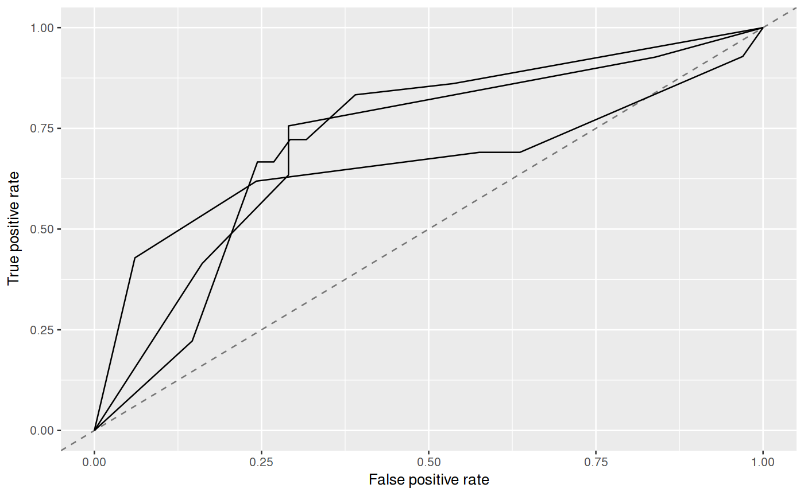
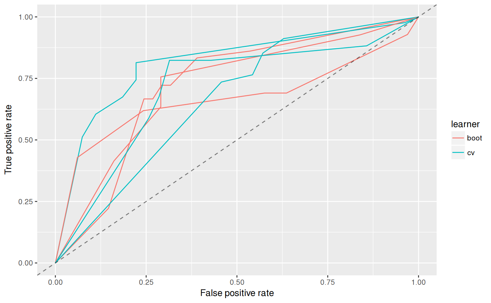

R/generateThreshVsPerf.R
Plots a ROC curve from predictions.
plotROCCurves(obj, measures, diagonal = TRUE, pretty.names = TRUE, facet.learner = FALSE)
| obj | (ThreshVsPerfData) |
|---|---|
| measures | ([list(2)` of Measure) |
| diagonal | ( |
| pretty.names | ( |
| facet.learner | ( |
ggplot2 plot object.
Other plot: createSpatialResamplingPlots,
plotBMRBoxplots,
plotBMRRanksAsBarChart,
plotBMRSummary,
plotCalibration,
plotCritDifferences,
plotLearningCurve,
plotPartialDependence,
plotResiduals,
plotThreshVsPerf
Other thresh_vs_perf: generateThreshVsPerfData,
plotThreshVsPerf
#> Error: Please use column names for `x`#> Error in predict(fit, task = sonar.task): object 'fit' not found#> Error in generateThreshVsPerfData(pred, list(fpr, tpr)): object 'pred' not foundplotROCCurves(roc)#> Error in checkClass(x, classes, ordered, null.ok): object 'roc' not found#>#>#>#>#>#>#>#>#>#>#>#>#>#>#>#>roc_l = generateThreshVsPerfData(list(boot = r, cv = r2), list(fpr, tpr), aggregate = FALSE) plotROCCurves(roc_l)# }